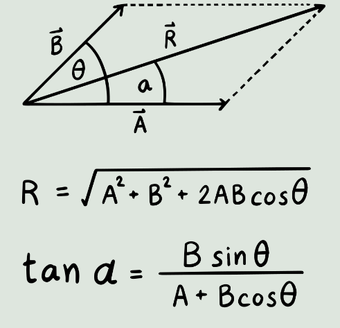

CALCULADORA
CALCULADORA

Bienvenidos
Este sitio web tiene como objetivo ayudarte a visualizar de manera clara y precisa los vectores mediante gráficos interactivos. Además, permite calcular el vector resultante de forma automática, facilitando así la comprensión de los problemas de física. Con esta herramienta, podrás explorar conceptos fundamentales de la física de una manera intuitiva y práctica, mejorando tu capacidad para resolver ejercicios y entender las relaciones entre diferentes vectores en el espacio.